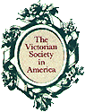

Victorian Events Calendar
BALLS & VINTAGE DANCE
PROGRAMS:
Jamaica Plain, MA. November 5, 2011
Harvest Ball please see website for more details.
Pasadena, California - Saturday, November 22, 2008
Los Angeles-area vintage dancers are cordially invited to attend the Victorian Grand Ball at the Pasadena Masonic Hall, 200 S. Euclid Avenue. Sponsored by Social Daunce Irregulars, the ball runs from 7:30 p.m. to midnight. $25 per person ($26.25 if purchased online). For more information, visit http://victoriandance.org. Send checks to Social Daunce Irregulars, 16326 Itasca Street, North Hills, CA 91343.
December 6, 2008 - Wethersfield, CT
Victorian Ball. Keeney Memorial Hall. 8 - 11 PM Email Mary Lovelock for additional details
More information on Historical dance please look at the: The
Commonwealth Vintage Dancers, The
Vintage Dance Society, or The
Flying Cloud Academy of Vintage Dance, Period
Clothing and Hairstyles from Vintage Victorian, and Social
Dance Irregulars.
Please also look at Manners Culture
& Dress of the Best American Society, A
Period Note on Perfumes and The
Dance Card Museum
SUMMER SCHOOL:
The Victorian Society in America presents summer school programs
on Victorian architecture in Newport, Rhode Island and London,
England. URL: http://www.victoriansociety.org
EVENTS:
WILLIAM MORRIS
ACTIVITIES:
Other Arts & Crafts Movement Events Calendars on the
Internet:
The
Arts & Crafts Society
More information on visiting Morris sites will be posted on the
Founders of the Arts & Crafts
Movement web page.
 This
Calendar is sponsored by J.R. Burrows &
Company, Historical-Design Merchants. Please visit our home page
to see our reproduction Victorian wallpapers, fabrics, lace curtains
and carpets.
This
Calendar is sponsored by J.R. Burrows &
Company, Historical-Design Merchants. Please visit our home page
to see our reproduction Victorian wallpapers, fabrics, lace curtains
and carpets.

The Victorian Society in America provides annual seminars
on a variety of 19th century topics and highly respected summer
school programs on Victorian architecture in England and
America.
The editors of the Victorian Events Calendar welcome listings from
local historical societies and museums, educational non-profit group,
and established vintage dance societies. We regret that we do not
post announcements of ongoing dance classes, and we maintain
discretion in mentioning commercial events and links.
Comments and submissions should be addressed to victoria@burrows.com